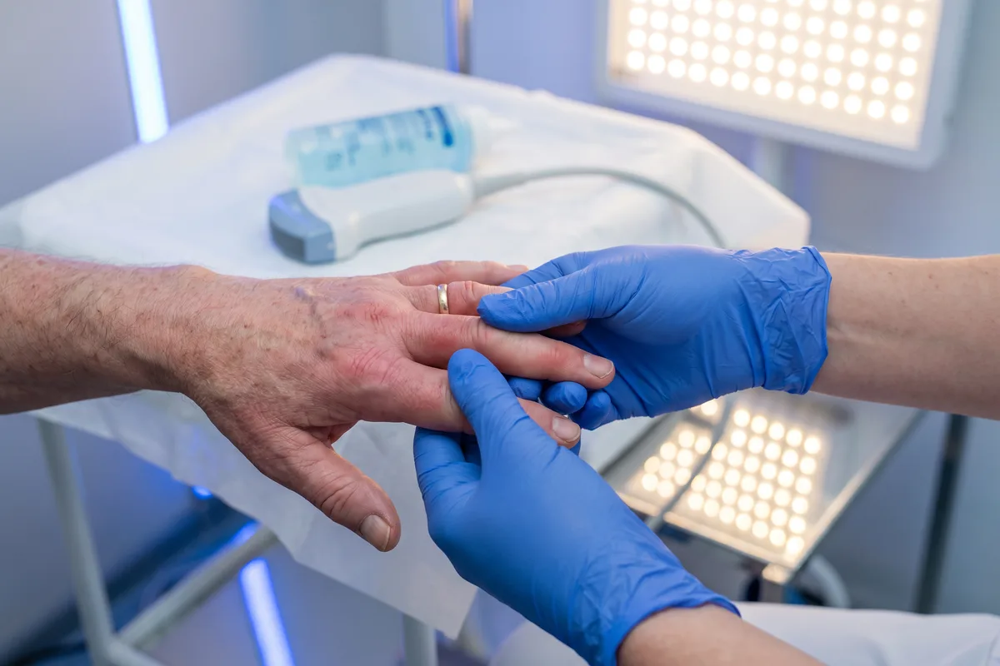

Dr. Marcelo Marquez Cruz · Mérida
Ultrasonido Reumatológico
Indicaciones para este estudio
¿Cuándo se solicita este estudio?
- Dolor, inflamación o rigidez articular matutina mayor a 30 minutos
- Sospecha o diagnóstico confirmado de artritis reumatoide
- Ataques de gota o hiperuricemia con síntomas articulares
- Artritis psoriásica, espondiloartritis o artritis reactiva
- Osteoartritis con derrame articular o dolor persistente
- Seguimiento y monitorización de respuesta a tratamiento biológico o DMARD
- Evaluación de Score G-7 en artritis reumatoide establecida
- Detección de erosiones óseas tempranas antes de que sean visibles en radiografía
Preparación: Sin ayuno. Ropa cómoda de dos piezas. Sin cremas en las articulaciones. Trae estudios previos y lista de medicamentos. Ver guía completa.
El ultrasonido reumatológico es una herramienta de diagnóstico de alta precisión para la evaluación de enfermedades inflamatorias y degenerativas articulares. A diferencia de la radiografía convencional, el ultrasonido permite detectar cambios inflamatorios en etapas muy tempranas, antes de que aparezcan las erosiones óseas visibles en rayos X. Mediante el Doppler color, se puede cuantificar la actividad inflamatoria de la sinovial en tiempo real, lo que es fundamental para evaluar la respuesta al tratamiento.
En la artritis reumatoide, el ultrasonido detecta sinovitis activa, tenosinovitis flexora y erosiones óseas en articulaciones de manos, muñecas y pies. El protocolo Score G-7 evalúa sistemáticamente 7 articulaciones clave para cuantificar la actividad de la enfermedad y monitorizar el tratamiento con DMARDs o biológicos. En la gota, el ultrasonido identifica el signo del doble contorno (depósito de cristales de urato sobre el cartílago articular), tofos y depósitos en tendones, con mayor sensibilidad que la radiografía.
Para la osteoartritis, el ultrasonido evalúa el grosor del cartílago articular, la presencia de osteofitos, derrame y sinovitis secundaria. En la pseudogota (pirofosfato cálcico), detecta depósitos de cristales en el cartílago hialino y fibrocartílago. El estudio también es útil para guiar aspiraciones articulares diagnósticas y procedimientos terapéuticos como infiltraciones con corticosteroide.
¿Por qué el ultrasonido detecta artritis antes que la radiografía?
La radiografía convencional solo muestra cambios óseos avanzados. El ultrasonido reumatológico con Doppler color detecta la sinovitis activa (inflamación de la membrana articular) desde las primeras semanas de la enfermedad, cuando aún no hay erosiones visibles en rayos X. Esto permite iniciar tratamiento antes, preservar la función articular y evitar daño irreversible. Es la herramienta de elección para el seguimiento de pacientes con artritis reumatoide en Mérida, Yucatán.
Condiciones que evaluamos
- Artritis reumatoide — sinovitis, erosiones, Score G-7
- Gota y cristalopatías — signo del doble contorno, tofos
- Artritis psoriásica y espondiloartritis
- Osteoartritis con derrame articular
- Pseudogota (pirofosfato cálcico)
- Seguimiento de tratamiento biológico o DMARD
- Artritis reactiva e infecciosa

Preguntas frecuentes
¿Qué detecta el ultrasonido reumatológico?
¿Qué es el Score G-7?
¿Necesito preparación especial?
¿Listo para tu estudio?
Agenda en Ultrasonido Biogamma, Mérida, Yucatán. Diagnóstico preciso.